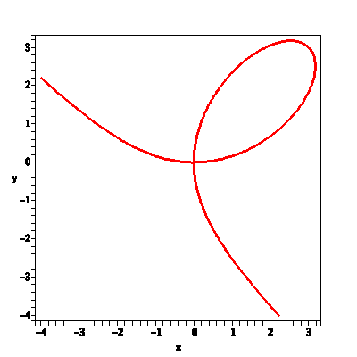
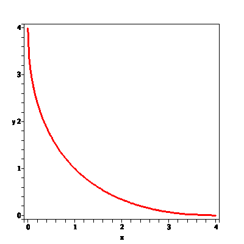
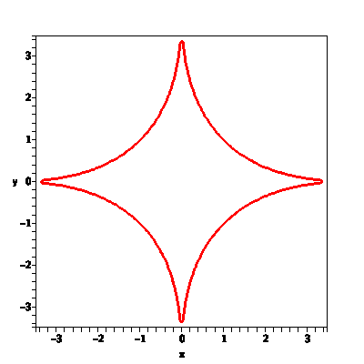
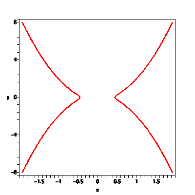
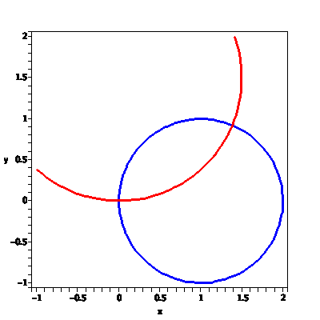
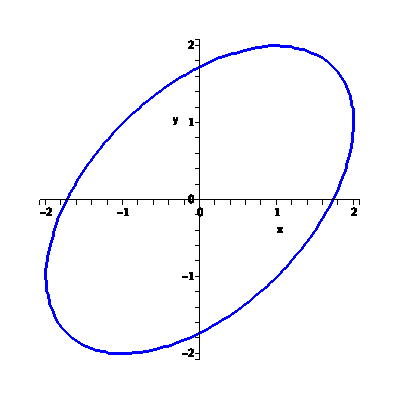

| > | with(plots): |
| > | Stuff:='grid=[140,140],axes=boxed,thickness=2': |
| > | implicitplot(x^3+y^3-6*x*y,x=-4..4,y=-4..4,Stuff); |

| > | implicitplot(abs(x)^(1/2)+abs(y)^(1/2)-2,x=0..4,y=0..4,Stuff); |

| > | implicitplot(abs(x)^(1/2)+abs(y)^(1/2)-2,x=-4..4,y=-4..4,Stuff); |

| > | implicitplot(y^2-(5*x^4-x^2),x=-2..2,y=-8..8,Stuff); |

| > | A:=implicitplot(x^2+y^2=2*x,x=-1..2,y=-1..2,color=blue,thickness=2): |
| > | B:=implicitplot(x^2+y^2=3*y,x=-1..2,y=-1..2,color=red,thickness=2): |
| > | display(A,B,axes=boxed, scaling=constrained); |

| > | implicitplot(x^2-x*y+y^2-3,x=-2..2,y=-2..2,color=blue,thickness=2); |

| > |